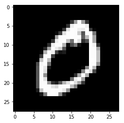
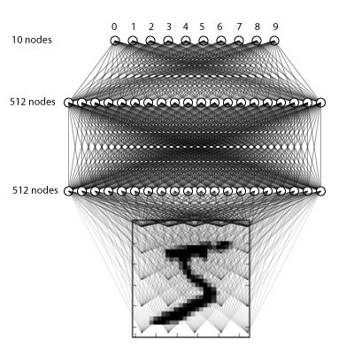
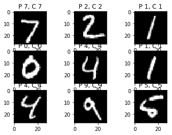
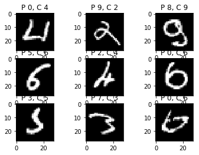

声明: 本文由DataScience编辑发表, 转载请注明本文链接mlln.cn, 并在文后留言
转载.
本文代码运行环境:
- windows10
- python3.6
- jupyter notebook
- tensorflow 1.x
- keras 2.x
1 | %matplotlib inline |
用Keras建立一个简单的神经网络
这是在Keras的神经网络中进行数字识别的简单快速入门，用于北京师范大学的深度学习教程。它主要基于Keras中的mnist_mlp.py示例。
在这篇文章中，您将了解如何使用Keras深度学习库开发深度学习模型，以便在Python中识别MNIST手写数字。完成本教程后，您将了解：
- 如何在Keras中加载MNIST数据集
- 理解图片的数据结构
- 如何开发和评估深度前馈神经网络(Deep Feed Forward)
下面先引入我们需要用到的库:
1 | import numpy as np |
d:\mysites\deeplearning.ai-master\.env\lib\site-packages\h5py\__init__.py:36: FutureWarning: Conversion of the second argument of issubdtype from `float` to `np.floating` is deprecated. In future, it will be treated as `np.float64 == np.dtype(float).type`.
from ._conv import register_converters as _register_converters
Using TensorFlow backend.
MNIST手写数字识别问题的描述
这是一项数字识别任务, 有10个数字（0到9）或10个类。
MNIST问题是由Yann LeCun，Corinna Cortes和Christopher Burges开发的用于评估手写数字分类问题的机器学习模型的数据集。该数据集由国家标准与技术研究所（NIST）提供的许多扫描数字构成。这是数据集的名称来源，被称为Modified NIST或MNIST数据集。
每个图像是28x28像素的正方形（总共784个像素）。其中60,000个图像用于训练模型，并且单独的10,000个图像集用于测试模型。
加载图片数据
Keras深度学习库提供了加载MNIST数据集的便捷方法。数据集在第一次调用此函数时自动下载，并作为15MB文件存储在〜/.keras/datasets/mnist.npz的主目录中。这对于开发和测试深度学习模型非常方便。为了演示加载MNIST数据集是多么容易，我们将首先编写一个小脚本来下载和可视化训练数据集中的第1个图像。(如果你你的程序加载的时候非常慢, 可以自己去这里下载这个文件, 然后放到上面提到的目录中: https://s3.amazonaws.com/img-datasets/mnist.npz)
1 | nb_classes = 10 |
X_train original shape (60000, 28, 28)
y_train original shape (60000,)
1 | # 查看第2个图片的数据: |
0__,0__,0__,0__,0__,0__,0__,0__,0__,0__,0__,0__,0__,0__,0__,0__,0__,0__,0__,0__,0__,0__,0__,0__,0__,0__,0__,0__
0__,0__,0__,0__,0__,0__,0__,0__,0__,0__,0__,0__,0__,0__,0__,0__,0__,0__,0__,0__,0__,0__,0__,0__,0__,0__,0__,0__
0__,0__,0__,0__,0__,0__,0__,0__,0__,0__,0__,0__,0__,0__,0__,0__,0__,0__,0__,0__,0__,0__,0__,0__,0__,0__,0__,0__
0__,0__,0__,0__,0__,0__,0__,0__,0__,0__,0__,0__,0__,0__,0__,0__,0__,0__,0__,0__,0__,0__,0__,0__,0__,0__,0__,0__
0__,0__,0__,0__,0__,0__,0__,0__,0__,0__,0__,0__,0__,0__,0__,51_,159,253,159,50_,0__,0__,0__,0__,0__,0__,0__,0__
0__,0__,0__,0__,0__,0__,0__,0__,0__,0__,0__,0__,0__,0__,48_,238,252,252,252,237,0__,0__,0__,0__,0__,0__,0__,0__
0__,0__,0__,0__,0__,0__,0__,0__,0__,0__,0__,0__,0__,54_,227,253,252,239,233,252,57_,6__,0__,0__,0__,0__,0__,0__
0__,0__,0__,0__,0__,0__,0__,0__,0__,0__,0__,10_,60_,224,252,253,252,202,84_,252,253,122,0__,0__,0__,0__,0__,0__
0__,0__,0__,0__,0__,0__,0__,0__,0__,0__,0__,163,252,252,252,253,252,252,96_,189,253,167,0__,0__,0__,0__,0__,0__
0__,0__,0__,0__,0__,0__,0__,0__,0__,0__,51_,238,253,253,190,114,253,228,47_,79_,255,168,0__,0__,0__,0__,0__,0__
0__,0__,0__,0__,0__,0__,0__,0__,0__,48_,238,252,252,179,12_,75_,121,21_,0__,0__,253,243,50_,0__,0__,0__,0__,0__
0__,0__,0__,0__,0__,0__,0__,0__,38_,165,253,233,208,84_,0__,0__,0__,0__,0__,0__,253,252,165,0__,0__,0__,0__,0__
0__,0__,0__,0__,0__,0__,0__,7__,178,252,240,71_,19_,28_,0__,0__,0__,0__,0__,0__,253,252,195,0__,0__,0__,0__,0__
0__,0__,0__,0__,0__,0__,0__,57_,252,252,63_,0__,0__,0__,0__,0__,0__,0__,0__,0__,253,252,195,0__,0__,0__,0__,0__
0__,0__,0__,0__,0__,0__,0__,198,253,190,0__,0__,0__,0__,0__,0__,0__,0__,0__,0__,255,253,196,0__,0__,0__,0__,0__
0__,0__,0__,0__,0__,0__,76_,246,252,112,0__,0__,0__,0__,0__,0__,0__,0__,0__,0__,253,252,148,0__,0__,0__,0__,0__
0__,0__,0__,0__,0__,0__,85_,252,230,25_,0__,0__,0__,0__,0__,0__,0__,0__,7__,135,253,186,12_,0__,0__,0__,0__,0__
0__,0__,0__,0__,0__,0__,85_,252,223,0__,0__,0__,0__,0__,0__,0__,0__,7__,131,252,225,71_,0__,0__,0__,0__,0__,0__
0__,0__,0__,0__,0__,0__,85_,252,145,0__,0__,0__,0__,0__,0__,0__,48_,165,252,173,0__,0__,0__,0__,0__,0__,0__,0__
0__,0__,0__,0__,0__,0__,86_,253,225,0__,0__,0__,0__,0__,0__,114,238,253,162,0__,0__,0__,0__,0__,0__,0__,0__,0__
0__,0__,0__,0__,0__,0__,85_,252,249,146,48_,29_,85_,178,225,253,223,167,56_,0__,0__,0__,0__,0__,0__,0__,0__,0__
0__,0__,0__,0__,0__,0__,85_,252,252,252,229,215,252,252,252,196,130,0__,0__,0__,0__,0__,0__,0__,0__,0__,0__,0__
0__,0__,0__,0__,0__,0__,28_,199,252,252,253,252,252,233,145,0__,0__,0__,0__,0__,0__,0__,0__,0__,0__,0__,0__,0__
0__,0__,0__,0__,0__,0__,0__,25_,128,252,253,252,141,37_,0__,0__,0__,0__,0__,0__,0__,0__,0__,0__,0__,0__,0__,0__
0__,0__,0__,0__,0__,0__,0__,0__,0__,0__,0__,0__,0__,0__,0__,0__,0__,0__,0__,0__,0__,0__,0__,0__,0__,0__,0__,0__
0__,0__,0__,0__,0__,0__,0__,0__,0__,0__,0__,0__,0__,0__,0__,0__,0__,0__,0__,0__,0__,0__,0__,0__,0__,0__,0__,0__
0__,0__,0__,0__,0__,0__,0__,0__,0__,0__,0__,0__,0__,0__,0__,0__,0__,0__,0__,0__,0__,0__,0__,0__,0__,0__,0__,0__
0__,0__,0__,0__,0__,0__,0__,0__,0__,0__,0__,0__,0__,0__,0__,0__,0__,0__,0__,0__,0__,0__,0__,0__,0__,0__,0__,0__
如果你上过幼儿园, 你应该能看出这个图上的数字是0。然后, 就是图片的本质, 图片本质上就是二维矩阵或者三维的张量。我们现在用到的图片是灰度图片, 没有颜色, 所以只需要一个二维矩阵即可。除了向上面那样查看图片外, 我们更多的是使用下面的方法。
1 | plt.imshow(X_train[1], cmap='gray') |

调整数据格式便于进行计算
我们的神经网络的输入为一个向量，因此我们需要对图片进行整形，以使每个28x28图像成为单个784维向量。我们还将数字缩放到[0-1]范围而不是[0-255]
1 | X_train = X_train.reshape(60000, 784) |
Training matrix shape (60000, 784)
Testing matrix shape (10000, 784)
将目标矩阵修改为one-hot格式，即
1 | 0 -> [1, 0, 0, 0, 0, 0, 0, 0, 0] |
1 | Y_train = np_utils.to_categorical(y_train, nb_classes) |
创建网络
在这里，我们将做一个简单的3层全连接网络。

1 | model = Sequential() |
编译模型
Keras构建在TensorFlow之上，这两个软件包允许您在Python中定义计算图，然后它们可以在CPU或GPU上高效编译和运行，而无需Python解释器的开销。
在编写模型时，Keras会要求您指定损失函数和优化器。我们在这里使用的损失函数称为分类交叉熵(categorical_crossentropy)，并且是一种非常适合比较两个概率分布的损失函数。
在这里，我们的预测是十个不同数字的概率分布（例如“我们80％确信这个图像是3, 10％确定它是8, 5％它是2，等等”），而观察值Y_train和Y_text是概率分配正确类别为100％，其他所有类别为0。交叉熵是衡量预测分布与观察值分布的差异的度量。 维基百科的更多细节
优化器有助于确定模型学习的速度。我们不会过多详细讨论这个问题，但“adam”通常是一个不错的选择。
1 | model.compile(loss='categorical_crossentropy', optimizer='adam', metrics=['accuracy']) |
训练模型
这是有趣的部分：您可以将之前加载的训练数据提供给此模型，它将学习对数字进行分类
1 | model.fit(X_train, Y_train, |
Train on 60000 samples, validate on 10000 samples
Epoch 1/4
60000/60000 [==============================] - 7s 108us/step - loss: 0.2432 - acc: 0.9285 - val_loss: 0.1032 - val_acc: 0.9678
Epoch 2/4
60000/60000 [==============================] - 6s 104us/step - loss: 0.1005 - acc: 0.9692 - val_loss: 0.0766 - val_acc: 0.9763
Epoch 3/4
60000/60000 [==============================] - 6s 99us/step - loss: 0.0713 - acc: 0.9773 - val_loss: 0.0665 - val_acc: 0.9799
Epoch 4/4
60000/60000 [==============================] - 6s 106us/step - loss: 0.0560 - acc: 0.9817 - val_loss: 0.0646 - val_acc: 0.9805
最后，评估其性能
1 | score = model.evaluate(X_test, Y_test) |
10000/10000 [==============================] - 0s 48us/step
Test score: 0.06461735829573591
Test accuracy: 0.9805
检查输出
检查输出并确保一切看起来都很好，这总是一个好主意。在这里，我们将看一些正确的例子，以及一些错误的例子。
1 |
|
1 | plt.figure() |


总结
简单地说，dropout指的是在随机选择的某些神经元的训练阶段忽略某些神经元。通过“忽略”，我的意思是在特定的计算过程中不考虑这些单位。技术上，在每个训练阶段，单个节点要么以1-p的概率从网络中丢弃，要么以概率p保持。而所谓的丢弃就是将激活量强制设置为0。

注意
本文由jupyter notebook转换而来, 您可以在这里下载notebook
有问题可以直接在下方留言
或者给我发邮件675495787[at]qq.com
请记住我的网址: mlln.cn 或者 jupyter.cn